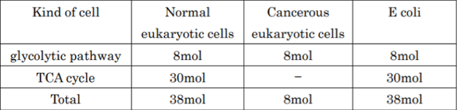

About ATP
ATP (Adenosine triphosphate) is a nucleotide which Adenine(base) and Ribose(sugar) combined with three phosphoric acids. When ATP is hydrolyzed by ATPase(enzyme), one phosphoric acid comes off. At that moment, energy
occurred (7.3kcal per ATP 1 moll). We use this energy when we perform all sorts of life activities such as moving a muscle, degrading cells and synthesizing a substance. ATP is necessary substance for us. Next, I explain ATP generating from glucose.
Internal respiration means to store energy obtaining from some foods to ATP. Internal respiration has two-step reactions. First step is glycolytic pathway. By this reaction, Glucose is metabolized for Pyruvic acid without oxygen in cytoplasm.
Second step is TCA cycle. Before this step, Pyruvic acid is translated into Acetyl-CoA. Then Acetyl-CoA is metabolized for carbon dioxide and water with oxygen in mitochondrion in the case of eukaryotic cells or cellular membrane in the case of
E coli. There are two ways of ATP generation. First reaction is substrate-level phosphorylation. In this reaction, ATP is generated by ADP and phosphoric acid to reaction intermediates of glucose.
{kind=link}
Figure 1:Substrate-level phosphorylation
Second reaction is oxidative phosphorylation. In this reaction, hydrogen and electron are taken from material consumed in internal respiration by enzyme, then electron is transported to electron transport system in mitochondrion’s inner membrane (In the
case of E coli, inner cellular membrane). In electron transport, ATP is generated from ADP using potential difference between inner membrane and outer one.
{kind=link}
Figure 2:Oxidative phosphorylation
Table 1:All reaction Table
{kind=link}
・Substrate-level phosphorylation in glycolytic pathway → 2 ATP
・Oxidative phosphorylation in glycolytic pathway → 6ATP
・Substrate-level phosphorylation in TCA cycle → 2ATP
・Oxidative phosphorylation
in TCA cycle → 28ATP

{kind=link}
Simulation
Intracelluar Signal Transduction
The cell responses happen in cell according to input that is change of outside. The biochemistry factors that is stimulation outside cell are converted input by receptor of membrane, the input activate various enzymes in cytoplasm. Finally, target factor that is activated factor cause cell response according to input. This information transduction system is called intracellular signal transduction. In other words, the intracellular signal transduction control cell responses.
Simulation Method
We show intracellular signal transduction for mathematical. This method is formulating time variation of molar concentration of chemical species “X” as differential equation. The change of malar concentration of chemical spacies “X” is defined nest equation(Eq.1).
$\cfrac{d[X]}{dt}=\sum v_{{\rm production}_{i}}-\sum v_{{\rm comsumption}_{i}}$ (Eq.1)
$v_{{\rm production}_{i}}$ : Increase amount of [$X$] per unit time in reaction "$i$"
$v_{{\rm comsumption}_{i}}$
: Decrease amount of [$X$] per unit time in reaction "$i$"
{kind=link}
Figure 3 : Differential equation model based on reaction kinetics
In order to calculate the concentration change amount, it is necessary to establish an equation depending on how the chemical species react. The formularizing method is as shown below(Ep2-Ep4)
・The binding two chemical species ”A" and "B”.
$v=k_{p}\cdot[A]\cdot[B]-k_{m}\cdot[C]$ (Eq.2)
$v$ : The amount of concentration change [M/s]
$[X]$ : The concentraiton of chemical spacies "X" [M]
$k_{p}$ :
The binding rate constant [1/M $\cdot$ s]
$k_{m}$ : The dissociation rate constant [1/s]
{kind=link}
Figure 4 :The binding two chemical species ”A" and "B”
・The phosphorylatedof protein “S” by enzyme “E”.
$v_{f}=\cfrac{k_{cat}\cdot[E]\cdot[S]}{K_{m}+[S]}$ (Eq.3)
$k_{cat}$ : The rate constant [1/s]
$K_{m}$ : The Michaelis constant [M]
{kind=link}
Figure 5 : The phosphorylatedof protein “S” by enzyme “E”
・Dephosphorylation of Protein ”S*”.
$v_{b}=\cfrac{V_{max}\cdot[S^*]}{K_{m}+[S^*]}$ (Eq.4)
$V_{max} $ : The max satiation rate [M/s]
$K_{m}$ : The Michaelis constant [M]
{kind=link}
Figure 6 : Dephosphorylation of Protein ”S*”
Finally, we calculate each relation of equation of all chemical species, calculate the amount of change of each species per a unit of time.
Kholodenko model Simulation
In our study, we simulated on the basis of “Kholodenko model”[4] when modeling the intracellular signal transduction. ”Kholodenko model” is that BorisN.Kholodenko convert signal transduction of EGF receptor into model. This is a very reliable model because they make the model comparing biochemical experiments. We simulate that Ras proteins isn’t phosphorylated whether it is possible after we decreased or disappeared ATP. On the basis of the created diffential equations, the concentration change of Ras protein per hour is graphically represented by the Euler method. The result is shown in Figure 7.
{kind=link}
Figure 7 :The decreasing rate of ATP
The vertical axis is Total max phosphorylated Ras protein concentration, the horizontal axis is decreasing rate of ATP. It is clear by Figure4 that Ras protein isn’t phosphorylation when the value of ATP is none.
E.coli Simulation
In this research, we will conduct experiments using natural E. coli not only test tubes. As mentioned earlier, there are no examples of moving DNA circuits with natural cells. E. coli has already proposed a method such
as making a hole, and thought that it is suitable as a trigger for experiment of DNA circuit.
E. coli is a type of prokaryote that has prokaryotic cells. It is used as an experimental material and studied
in detail as a model organism living in an animal digestive org anism and inhabiting the large intestine. Unlike eukaryotic cells such as human cells composed of three layers, cell membranes, cell walls, cytoplasmic matrix, chromosomes containing
DNA are present in the cells.
We conducted a simulation on the chemotaxis of E. coli. Chemotaxis is a mechanism by which E. coli changes direction, and it is one of the representative sig nal transduction of E.
coli. Since ATP is required for chemotaxis, simulation was performed when ATP was removed as with the Kholodenko model. The result is shown in Figure 8. From Fig ure 8, it was confirmed that signal transmission stops like the Kholodenko model

Figure 8 : Simulation of result of chemotaxis